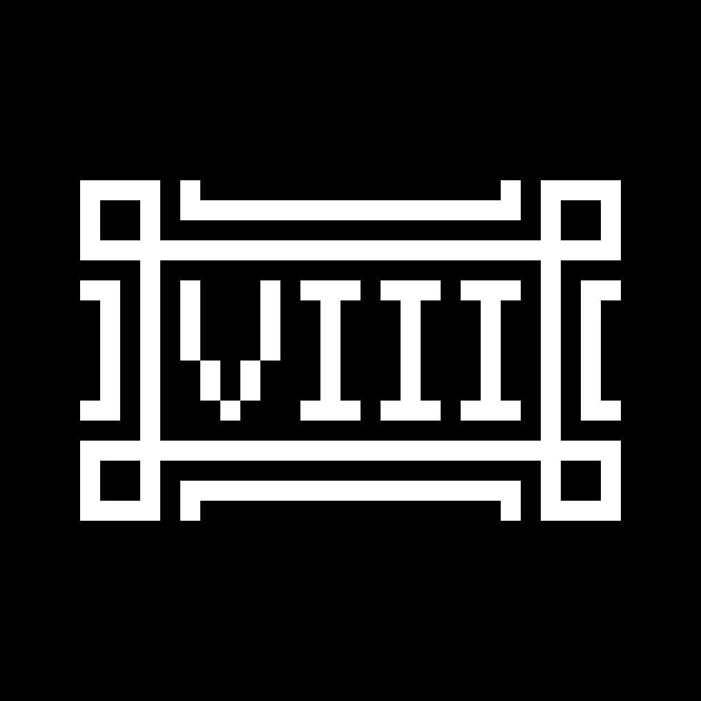

|
Run time:The starting time is unknown. It ended on Tuesday, June 15, 2021.Game version:1.16.5 - 1.17Seed:3071149902952625218Download WorldTowards the end of the world's run time, many things were griefed. There are two downloads available. the Up to date download is, well, up to date; the Less griefed download was taken two days before the end of the world's run time. Less stuff is griefed in that one but unfortunately not everything could be recovered in the backup. The player(s) responsible are not known.

|
World #8
|
|---|